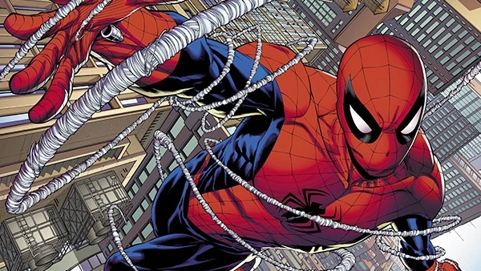
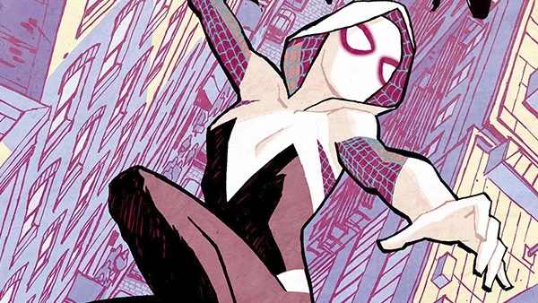
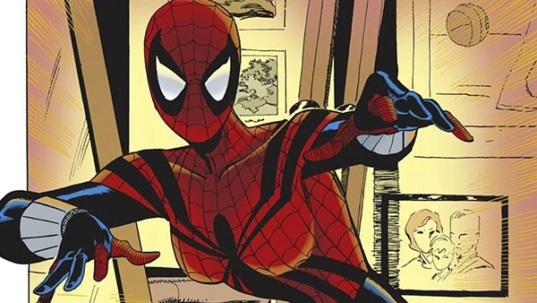

Descubra agora alguns dos aranhas do mundo das HQS


Com o filme animação da Marvel, Homem-Aranha no Aranhaverso (2018),vimos que existem muitas versões do herói, além do conhecido Peter Parker. Conheça todos os aranhas que existem no Aranhaverso!
Peter Parker, o "amigo da vizinhança"
Origem: Terra-616
O espetacular Homem-Aranha, o original. Obviamente que o Peter Parker do universo principal da Marvel participaria desse evento. Não apenas ele integra o exército dos aranhas, como é escolhido entre os vários Homens-Aranha para que lidere a missão para derrotar os Herdeiros.
Homem-Aranha Superior
Origem: Terra-616
Sim, ele é do mesmo universo que o Homem-Aranha original. Na verdade, ele é o Homem-Aranha original, ao menos o corpo é. O Homem-Aranha Superior foi, na verdade, Dr. Octopus que havia transferido sua mente para o corpo de Peter Parker e assumido o controle das ações do herói. Ele se juntou ao exército dos aranhas durante um breve período que esteve deslocado na linha temporal, por isso não há incongruência com a presença do Peter Verdadeiro (só é confuso pra caramba).
Homem-Aranha Ultimate
Origem: Terra-1610
Na verdade, este Homem-Aranha, não é uma versão de Peter Parker, mas sim um segundo Homem-Aranha a surgir nesse universo. Miles Morales também foi picado por uma aranha geneticamente modificada e adquiriu os poderes do Homem-Aranha (e alguns extras). Contudo, Miles só se tornaria um super-herói após a morte do Peter Parker de seu universo. Assumiu a responsabilidade do manto de Homem-Aranha e continuou o legado do herói.
Spider-Gwen
Origem: Terra-65
Neste universo, quem foi picada pela aranha e ganhou os poderes não foi Peter Parker, e sim Gwen Stacy. Outra diferença da universo principal foi como ela decidiu ser uma super-heroína. Gwen apenas decidiu assumir a responsabilidade de ser a Mulher-Aranha após Peter Parker morrer tentando ser especial como ela.
Aranha Escarlate
Origem: Terra-616
Kaine Parker, junto com Ben Reilly foram dois clones de Peter Parker criados pelo supervilão Chacal. Inicialmente um inimigo do Homem-Aranha, Kaine logo passou para o lado do bem e se tornou o super-herói Aranha Escarlate, tendo a cidade de Houston, no Texas, como sua base de operações. Possui todos os poderes do Homem-Aranha, porém mais fortes e ampliados.
Ben Reilly, o clone que não morreu
Origem: Terra-94
Enquanto que no universo principal (Terra-616) o segundo clone de Peter Parker, Ben Reilly não sobreviveu ao ataque do Duende Verde, a versão da Terra-94 foi mais sortuda. Nessa realidade, Ben não apenas sobreviveu, como também assumiu o posto de Homem-Aranha depois que os poderes de Peter Parker começaram a desaparecer.
Homem-Aranha 2099
Origem: Terra-TRN588
No longínquo ano de 2099, Miguel O'Hara foi alvo de um plano maligno de seu chefe, que fez com o que o rapaz ficasse viciado em uma droga. Miguel tentou se curar através de um experimento, mas o resultado foi diferente do que esperava e Miguel descobriu que possuía poderes semelhantes aos de uma aranha. Os poderes deste Homem-Aranha são diferentes dos de Peter Parker, possuindo teia orgânica e garras retráteis.
May Parker
Origem: Terra-982
Mayday Parker é a primeira filha de Peter Parker com Mary Jane Wattson. Ela começou a desenvolver poderes semelhantes aos de seu pai aos 15 anos de idade, e logo após isso também começou a agir como uma super-heroína. Mayday foi resgatada pelos Homens-Aranha de outras realidades quando seu pai foi atacado e assassinado pelos Herdeiros. Ela apenas conseguiu levar consigo seu irmãozinho Ben.
Porco-Aranha
Origem: Terra-8311
Peter Porker era uma aranha que vivia no porão da casa de May Porker, uma cientista que havia criado o primeiro secador de cabelos atômico do mundo (mundo esse que é comandado por porcos cartunescos). May então usa sua invenção em si mesma, tornando-se radioativa no processo. Em um acesso de loucura, provavelmente causada pela radiação, May morde a aranha Peter, que cresce até se transformar em um porco antropomorfizado. Assim surgiu o Porco-Aranha.
Homem-Aranha Indiano
Origem: Terra-50101
Pavitr Prabhakar é um jovem indiano que vivia com seus tios Maya e Bin em Mumbai. Pavitr era constantemente atacado por seus colegas de escola e apenas tinha a amizade de Meera Jain. Um dia, quando fugia perseguido por seus colegas de escola, Pavitr encontra um ancião iogue que lhe concede os poderes de uma aranha, para que então pudesse enfrentar o mal que ameaçava o mundo.
Capitão Aranha (Spider-UK)
Origem: Terra-833
O Homem-Aranha de um universo em que esse super-herói surgiu em Londres e não em Nova York. Sua identidade secreta é William Braddock, e ele foi um dos primeiros Homem-Aranhas a perceber que algo de errado estava acontecendo com os Homens-Aranhas de vários universos.
Homem-Aranha Noir
Origem: Terra-90214
O Peter Parker dessa dimensão cresceu com seus tios paternos durante a Grande Depressão Americana, em 1933. Um dia, Peter encontrou o corpo mutilado de seu tio Ben, morto em retaliação por ter começado uma greve em uma fábrica têxtil. Peter ganha seus poderes após uma estátua de aranha quebrar e liberar uma infestação de aranhas, das quais uma morde o rapaz. Ele sonha com um deus aranha e acordo já com seus poderes. A partir de então ele passa a se vestir com uma máscara e sobretudo preto e se torna o Homem-Aranha Noir.
Capitão Universo
Origem: Terra-13
Em certo momento de sua vida como Homem-Aranha, Peter Parker se tornou o receptáculo da Força Enigma, uma fonte de energia que concede poderes quase divinos ao seu portador, transformando-o no Capitão Universo. Enquanto que o Homem-Aranha da Terra-616 utilizou de tal poder apenas para impedir um ataque de robôs, o Peter Parker da Terra-13 continuou com os poderes. No caso desse Peter, a frase de Tio Ben foi alterada para: "Com poderes supremos, vem a responsabilidade suprema."
Dama-Aranha
Origem: Terra-803
May Reilly era uma estudiosa e possuía vários animais em cativeiro em sua casa. Um dia, ao soltar uma aranha, tentou acariciá-la, mas foi picada em resposta. May não ganhou nenhum poder com isso, mas aprendeu uma lição: "Não deixe que ninguém te aprisione." Após a morte de seu pai, May usou seus conhecimentos para construir braços mecânicos e lançadores de teia, que usou para se tornar uma super-heroína em uma Nova York Steampunk.
Peni Parker
Origem: Terra-14512
A vida de Peni Parker mudou quando ela tinha apenas nove anos de idade. Seu pai, um cientista, morreu devido a um acidente enquanto pilotava a Sp//dr, um traje supertecnológico que pode grudar nas paredes e atirar fluído de teia. Peni então foi avisada por tio Ben e tia May que apenas ela era capaz de dar prosseguimento a pesquisa do pai. Ela aceitou o fardo e permitiu ser mordida por uma aranha radiativa, que lhe permitiria ter acesso ao sistema da Sp//dr.
Supaidaman
Origem:Terra-51778
Takuya Yamashiro é um piloto de motocross e, secretamente, atua como o Homem-Aranha. Ele ganhou seus poderes após ser injetado com o extrato-aranha e receber o Protetor Aranha, seu uniforme. Este Homem-Aranha tem como principal inimigo o Exército da Cruz de Ferro, com quem luta em vingança pela morte de seu pai. Como a origem deste Homem-Aranha é um tokutastu japonês, é óbvio que uma de suas principais armas é um robô gigante, chamado Leopardon
Punk-Aranha
Origem: Terra-138
Hobart Brown é o Homem-Aranha, o principal opositor do regime totalitarista do Presidente Osborn, que estava aliado de Venom. O Homem-Aranha conquistou o apoio das classes mais baixas da sociedade e formou seu Exército-Aranha, que marchou em protesto contra Osborn. Em sua batalha final, Homem-Aranha derrotou Venom com seu Punk Rock e acertou o Presidente Osborn com a sua guitarra. Depois disso, ainda revelou sua identidade secreta para a população.
Ben Parker
Origem: Terra-3145
Nesta realidade foi Tio Ben quem recebeu os poderes de Homem-Aranha. Isso aconteceu ao acompanhar seu sobrinho Peter a uma demonstração científica, onde foi picado por uma aranha radioativa. Apesar de Peter o incentivar a fazer uma carreira artística na TV com seus poderes, Ben resolve utilizá-los para ajudar pessoas. Contudo, Ben se aposenta de ser um super-herói após seu arqui-inimigo, o Elfo Esmeralda, descobrir sua identidade secreta e matar May e Peter.
Outros aranhas
São muitas as versões do Homem-Aranha e este artigo seria gigantesco se listássemos todas as versões existentes. Portanto, a seguir se encontram alguns outros cabeças-de-teia que merecem uma menção especial.
Aracnossauro (Terra-99476)
Um lagarto humanoide com poderes de aranha. Em seu universo, ele é um dos integrantes do Quinteto Fantástico.
Homem-Aranha Mangá (Terra-2301)
Este Peter Parker é o último descendente de um clã ninja e foi ensinado a lutar pelo seu Tio Ben.
Macaco-Aranha (Terra-8101)
O Peter Parker de um universo em que todas as pessoas são símios. Esta versão do Homem-Aranha é bem egoísta e impetuosa, não vendo problema algum em matar inimigos que não demonstram vontade alguma em se tornar melhores.
Homem-Aranha 2211 (Terra-9500)
Outro Homem-Aranha do futuro, como o próprio nome indica. Dr. Max Borne não possui nenhum poder de aranha, mas fez para sim uma armadura supertecnológica com braços extras para combater o crime. Este Homem-Aranha faz parte de uma organização que tenta prevenir disrupções na linha do tempo.
Homem-Aranha de seis braços (Terra-92100)

Em uma tentativa de se livra de seus poderes, o Peter Parker desta realidade desenvolveu um soro que o curaria de sua condição. Infelizmente o resultado não foi o esperado, e dois novos pares de braços cresceram em seu corpo. Após buscar a ajuda de vários outros cientistas e não conseguir reverter sua situação, Peter aprendeu a se aceitar. Esta versão conseguiu salvar Gwen Stacy e se tornou querido pelo mundo inteiro.
Príncipe de Arachne (Terra-71004)
Esta versão de Peter Parker vem de um mundo medieval, no qual ele é talentoso cavaleiro. Para poder participar do baile no qual a Pricessa Gwendolyn iria escolher seu noivo, Peter forja para si mesmo uma armadura com padrões de teia e assume o título de Príncipe de Arachne.
O que é o Aranhaverso?
Nos quadrinhos, o Aranhaverso (Spider-verse, no original em inglês) foi um evento em que vários Homens-Aranha de diferentes realidades, clones e personagens com poderes de aranha se juntaram para combater uma ameaça interdimensional. Tal ameaça era o grupo de vilões conhecidos como "Os Herdeiros", que estavam assassinando todos os totens da aranha de vários universos. Ou seja, estavam matando todas as pessoas que incorporavam as características desse animal.
Criador: Gleison Pereira Santiago
Contato:gleisonp881@gmail.com
08/05/2022